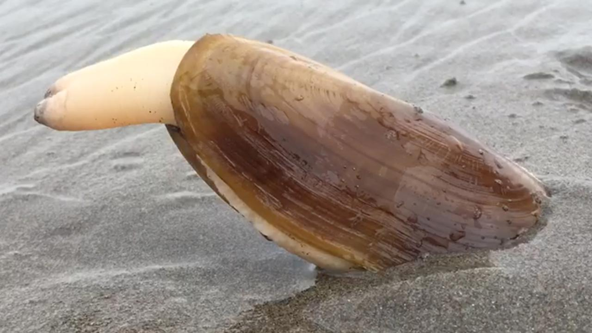

Welcome to Food Chain!
A food chain is a linear network of links in a food web starting from producer organism and ending at apex predators. Click on the boxes below to see an example of each
Polar Bears
Polar bears feed almost exclusively on ringed seals and bearded seals. They are also known to eat walrus, beluga whale and bowhead whale carcasses, birds’ eggs, and (rarely) vegetation. Polar bears travel great distances in search of prey.
Walrus
Walrus staples include clams, mussels and other bottom dwelling (or benthic) organisms that they locate through their whiskers. They are also known to eat carcasses of young seals when food is scarce.

Clams
Beer-Steamed Clams - Clams are inexpensive, plentiful, easy to cook, and delicious. And you barely need a recipe—once they open, they’re done.
